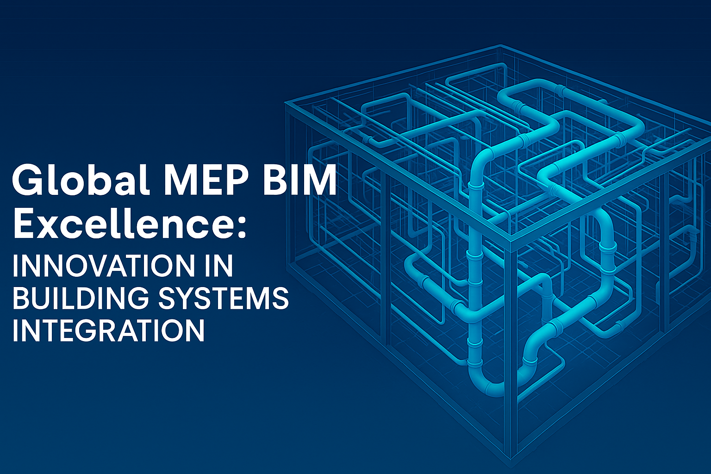

The evolution of global construction is tightly intertwined with advances in digital technology. As our cities and industries become more intelligent, more energy-conscious, and operationally complex, the integration of sophisticated building systems is no longer optional—it’s the new standard. At the heart of this transformation is MEP BIM: Building Information Modeling for Mechanical, Electrical, and Plumbing systems.
The world now demands buildings that are not just beautiful or structurally sound, but also healthy, energy-efficient, flexible, and intelligently managed. To achieve this, organizations are turning to experts equipped with both technical mastery and a global mindset. In this feature, we highlight five outstanding firms—Arup, AECOM, Jacobs Engineering Group, Tesla Outsourcing Services, and WSP—who lead the way in global MEP BIM innovation and delivery.
At its core, MEP BIM is the practice of modeling mechanical (heating, ventilation, air conditioning), electrical, and plumbing systems in a coordinated, digital environment. Instead of isolated 2D drawings, MEP BIM brings every pipe, wire, duct, and valve into a single, intelligent 3D space—enabling precise design, robust collaboration, and lifecycle management.
As construction projects expand across continents, several key challenges arise:
In short, Integrated MEP BIM is the engine behind reliable, sustainable, and globally consistent building systems in the 21st century.
If you’re selecting a global MEP BIM specialist, here’s what counts most:
Arup is globally known for climate-responsive engineering and human-centered design. Their pioneering work integrates innovative digital models (including platforms like ProjectOVE and Neuron) that support healthy, low-carbon buildings everywhere from Europe to Asia. Arup excels at bridging advanced BIM with sustainability strategies that future-proof facilities.
Website: https://www.arup.com/
AECOM leverages its vast worldwide presence to deliver BIM-led solutions at scale. From mega-airports to historic renovations, they use integrated digital workflows and platforms like BIM 360, ensuring rapid, consistent delivery and complete regulatory alignment, regardless of location.
Website: https://aecom.com/
Jacobs Engineering’s end-to-end approach means model-based design, digital twins, and data-driven lifecycle management. Their experience on giga-projects—like smart factories and major airport expansions—puts them at the forefront of project data integration and global green building progress.
Website: https://www.jacobs.com/
Tesla Outsourcing Services is a flexible, cost-effective global BIM partner with a technical presence in over 25 countries. They excel at providing detailed MEP models, rapid staff augmentation, and scalable support. Uniquely, Tesla is adept at adapting world-class best practices to local regulatory and project needs, smoothing handover and documentation for global clients.
Website: https://www.teslaoutsourcingservices.com/
WSP is recognized for pushing digital innovation in healthcare, tall buildings, and critical infrastructure. Through real-time visualization, modular design, and extensive energy/carbon modeling, WSP provides reliable, transparent, and sustainable digital handovers—empowering clients to manage their assets proactively.
Website: https://www.wsp.com/
Top global MEP BIM firms are setting new standards through:
MEP BIM enables coordinated, clash-free designs, improves collaboration among diverse international teams, accelerates project delivery, and ensures compliance with local regulations, reducing costly onsite errors and rework.
Digital twins link BIM models with live building data, allowing real-time monitoring, predictive maintenance, and more innovative facility management throughout the building’s life cycle.
Choosing an experienced global partner allows access to deep expertise across different regulatory environments, adaptation of world-class best practices to local project needs, and provision of scalable, detailed BIM solutions regardless of geography. For example, Tesla Outsourcing Services excels in delivering clash-free, compliant models, flexible resourcing, and efficient coordination that smooth project execution worldwide.
Integrated BIM supports energy modeling and carbon tracking early in design, enabling teams to optimize systems for green certifications and net-zero targets while facilitating data-driven operational efficiencies after handover.
The journey toward brilliant, resilient, and sustainable buildings is a global one. As digital expectations rise and infrastructures expand, partnering with leaders like Arup, AECOM, Jacobs Engineering Group, Tesla Outsourcing Services, and WSP becomes essential.
These companies set the benchmark for project excellence: integrating world-class BIM with hands-on global experience, continuous innovation, and a relentless focus on client value. For organizations ready to future-proof their assets and operations, prioritizing expertise in MEP BIM is the smartest investment you can make.
Choose partners who bring knowledge, adaptability, and digital mastery to every corner of your project—because in the new era of global building systems integration, excellence isn’t just an advantage; it’s the standard.